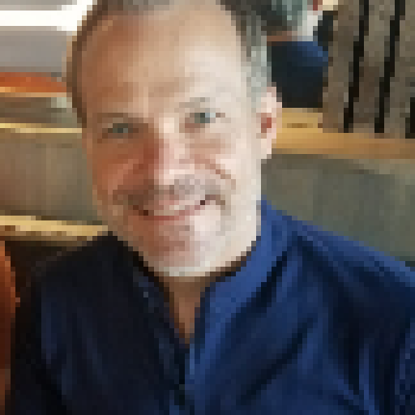
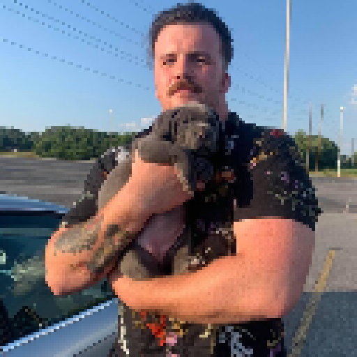
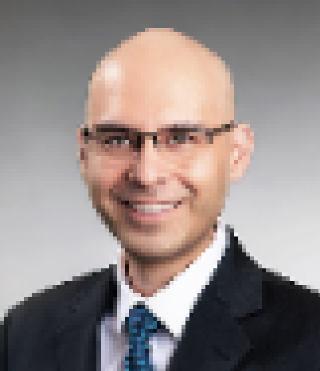

About Us
Chris Fanucchi
Chris is long-time IT professional, with 17 years in the tech industry as a software developer and network engineer. He also spent 12 years in the FBI as a Special Agent, where he had an opportunity to gain more experience with cybersecurity and manage large, multi-agency projects. What excites Chris most in any job is solving problems and bringing success to the organization and team. He has always loved programming, since he was in 3rd grade, and has experience with multiple computer languages, to include JavaScript, Python and PHP. Chris is currently looking for a position in software development as either a software engineer or development team leader.
Erik Dodd
Erik is a Software Developer with a background in Sales, Marketing, and Customer Service. He is passionate about Technology and building websites and applications that users find aesthetically pleasing and interactive. My core competencies include Leadership, Results, Communication, and Emotional Intelligence. I have experience working in businesses of all sizes including start-ups, enterprise-level Tech Companies, small businesses, and even in the non-profit sector. I'm a strong individual performer with a history of consistently high KPI performance. I value the importance of teamwork and building quality relationships with my colleagues and clients.
Ian Forrester
Prospective Software Developer with a background in military service and over 5 years of hands on training and experience. Formally the battalion level Sling load instructor, as well has the head ASPEN subject matter expert. Responsible for maintaining, teaching, and deploying over $400,000 of military grade water purification systems. Excellent communication, and critical thinking skills, always ready and eager to tackle new problems and gain more knowledge.
Mathew Torres
Before making the move to software development, I spent my career working in sales and marketing, entrepreneurship and leadership in the US Army. I have a passion for helping others and improving the world. I feel software development is going to be an in demand skill set for the foreseeable future and I want to position myself to be the most marketable. As I progress in the field, I want to help bridge the communication gap between tech and non-tech stakeholders.
